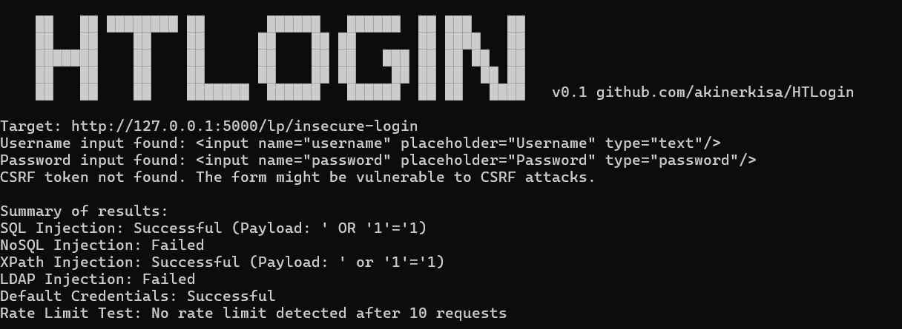

HowToLogin is a tool that tests web application login pages for login bypass. HTLogin tests for various login bypass payloads, common default credentials and rate limits on the login forms in the given url and presents it to the user.
!!! NOTE
You can try this tool with https://github.com/akinerkisa/renikApp login bypass page section.
Installation
git clone https://github.com/akinerkisa/HTLogin
cd HTLogin
pip install -r requirements.txt
Usage
python3 htlogin.py -u https://www.example.com/login
| Flag | Short | Description | Example | Default | Required |
|---|---|---|---|---|---|
| --url | -u | Specify URL | python3 htlogin.py -u https://www.example.com/login | N/A | Yes(One of them -u or -l) |
| --list | -l | Specify URL List | python3 htlogin.py -l list.txt | N/A | Yes(One of them -u or -l) |
| --credential-list | -cl | Specify default credentials path for test | python3 htlogin.py -cl credentials.txt | Defined in the program | No |
| --rate-limit | -r | Specify rate limit test request amount. | python3 htlogin.py -r 1337 | 300 | No |
| --verbose | -v | Toggles showing all Valid/Invalid results | python3 htlogin.py -v on/off | off | No |
| --language | -lang | Language code for keyword detection | python3 htlogin.py -lang tr | en | No |
| --output | -o | Specify output file | python3 htlogin.py -o output.txt | output.txt | No |
List File Example Format
http://127.0.0.1:5000/lp/insecure-login
http://127.0.0.1:5000/lp/secure-login
http://127.0.0.1:5000/lp/default-login
http://127.0.0.1:5000/lp/rate-limit-login
Features
- SQL Injection login bypass testing
- NoSQL Injection login bypass testing
- XPath Injection login bypass testing
- LDAP Injection login bypass testing
- Default Credentials testing
- Rate limit testing
- Multi-lang support for keyword check
- Url list support
How HTLogin Extracts Successful Login Attempts
HTLogin uses several techniques to detect whether a login attempt is successful:
- HTTP Status Code:
- The script checks if the login attempt results in an HTTP
302redirection (which often indicates a successful login). A redirection generally means the user has been authenticated and is being forwarded to another page, such as a dashboard. -
It extracts the redirection URL from the
Locationheader. If the redirect URL is different from the original login page, it is likely that the login was successful. -
Cookies:
- The script checks for the presence of session cookies, especially cookies that contain the word "session."
-
When a session cookie is set by the server, it typically indicates that the server has started a new session for an authenticated user.
-
Page Content:
- The script inspects the page's content by looking for specific success keywords such as
['welcome', 'dashboard', 'profile', 'logged in', 'successful']. -
It also ensures that failure keywords like
['invalid', 'incorrect', 'failed', 'error', 'try again']do not appear on the page. This keyword analysis helps to distinguish successful attempts from failed ones. -
Comparison with Original Page:
- The script compares the content length of the redirection page to the original login page. If the redirected page has a different content length than the login page, it indicates that the user was likely redirected to a different page, which signals a successful login.
By using a combination of these methods—redirect detection, session cookies, keyword analysis, and content comparison—HTLogin is able to accurately determine whether a login attempt was successful.
Multi-Language Support in Page Content Check
When checking the page content, it is checked in English by default. However, you can edit this with parameters. You can also add different languages and keywords by editing the languages.json file. Currently English and Turkish are defined.
Languages.json format:
"en": { # Language defination
"success": ["welcome", "dashboard", "profile", "logged in", "successful"], # Success keywords defination
"failure": ["invalid", "incorrect", "failed", "error", "try again"] # Failure keywords defination
}
Example Output
